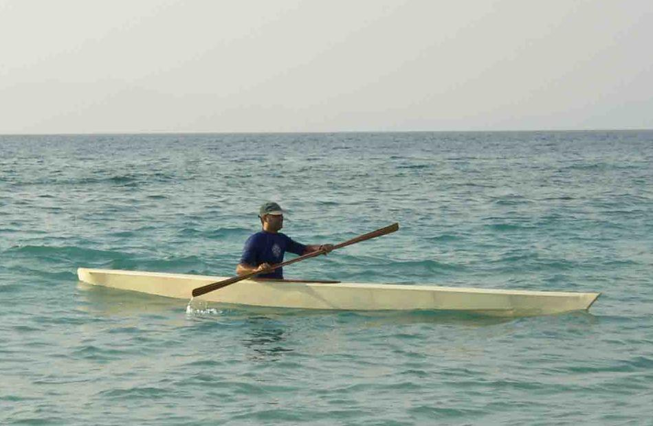

| FAP-16 By Emmanuel Gerogiannakis | Menu Previous Page Next Page |
|
 This non-folding FAP-16 Baidarka was built by Emmanuel Gerogiannakis of Rhodes Island, Greece. He is seen here paddling in the Aegean Sea. The FAP-16 was designed originally as a folding kayak using aluminum / HDPE construction. The design was based on the CNM-12212 historical Aleut Iqyax. |
|